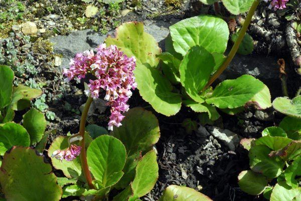

Latthe Education Society's Acharya Deshabhushan Ayurvedic Medical College And Hospital Bedkihal-Shamanewadi, 591214
Department of Dravyaguna Vigyana

Basonym of Drug
Pashanabheda
Main Synonym
Ashmaghna
Giribhida
Bhinnayojani
Pashanbhedaka
Regional Name
Bengali: Pathar Kuchi, Paterchur
Gujarati: Pakhanbheda
Hindi: Pakhanbheda
Kannada: Pashanbhedi
Marathi: Pashanbhedi
Telugu: Kondapindi
Tamil: Sirupillai
Botanical Name
Berginia ligulata Wall
Family
Saxifragaceae
External Morphology
A small perennial herb
Useful Parts
Root
Important Phytoconstituent
Berginine
Gallic Acid
Starch
Beta-Sitosterol
Tannin
Glycosides
Rasa Panchak
Rasa: Tikta, Kashaya
Guna: Laghu, Snigdha
Virya: Shita
Vipaka: Katu
Action
Tridoshahara
Therapeutic Indication
Mutravirechaniya (Diuretic)
Ashmarihara (Lithotriptic)
Pramehaghna (Anti-diabetic)
Hridrogahara (Treat cardiac disorders)
Therapeutic Uses
Ashmari:
Pashanabheda with Trinapanchmoola boiled in milk and given with honey is beneficial for renal calculi.
Netrabhishyanda:
Root paste is applied in conjunctivitis.
Amatisara:
Powder with normal water is beneficial in acute diarrhea.
Dose
Powder - 3-6 gm
Decoction - 50-100 ml
Formulations
Pashanbhedadi Ghrita
Pashanbhedadi Kwatha
Adverse Effect
Not Known